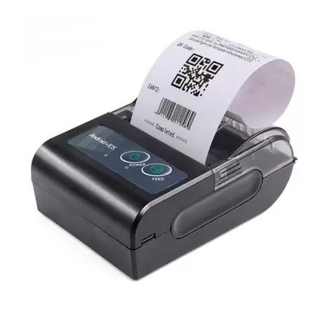

O Comanda Cloud foi desenvolvido para organizar as comandas do estabelecimento e agilizar o atendimento pegando o pedido na mesa e recebendo o pedido na mesma hora na cozinha.
Exemplo: Estabelecimento que possui uma cozinha, um garçom e um caixa. A sugestão de uso são 3 aparelhos celular ou tablet Android e 2 impressoras bluetooth.
1 aparelho pegando o pedido na mesa. 1 aparelho e 1 impressora recebendo o pedido na cozinha. 1 aparelho e 1 impressora no caixa.
Sim! Baixa o aplicativo em todos os aparelhos que precisar e acessa com o mesmo e-mail e senha.
Mesmo a versão gratuita não tem limites de aparelho.
O objetivo do app é resolver o problema que o estabelecimento tem com a comanda de papel, nele dá para pegar o pedido na mesa e receber na cozinha na mesma hora, dando muito mais agilidade no atendimento.
Baixa o aplicativo em todos os aparelhos que precisar e acessa com o mesmo e-mail e senha.
Mesmo a versão gratuita não tem limites de aparelho.
O objetivo do app é resolver o problema que o estabelecimento tem com a comanda de papel, nele dá para pegar o pedido na mesa e receber na cozinha na mesma hora, dando muito mais agilidade no atendimento.
Não! Atualmente temos apenas a versão para Android disponível para celular ou tablet.
Para utilizar as funções de imprimir é necessário uma impressora bluetooth.

O aplicativo possui dois tipos de impressões.
1- Imprimir a comanda. Esse tipo é usado para imprimir a conta e levar até a mesa quando o cliente pede a conta
2- Imprimir pedido na cozinha. Esse tipo é usado para quando o Garçom anota o pedido na mesa e na mesma hora esse pedido é impresso na cozinha.